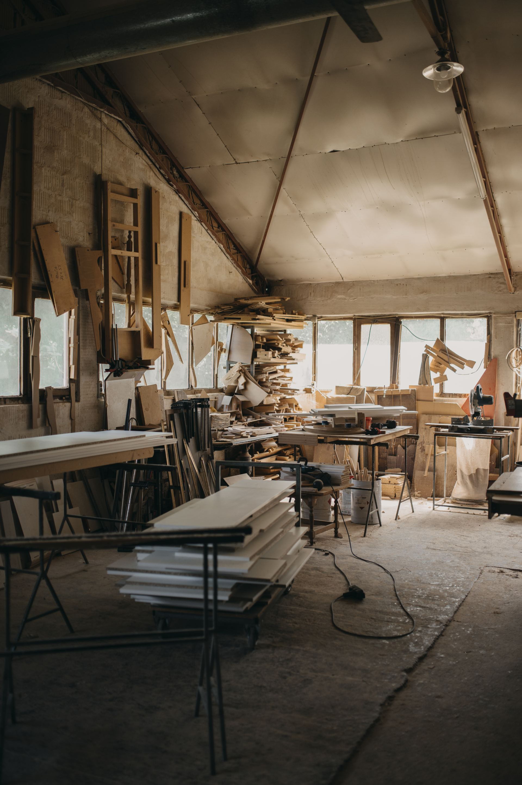
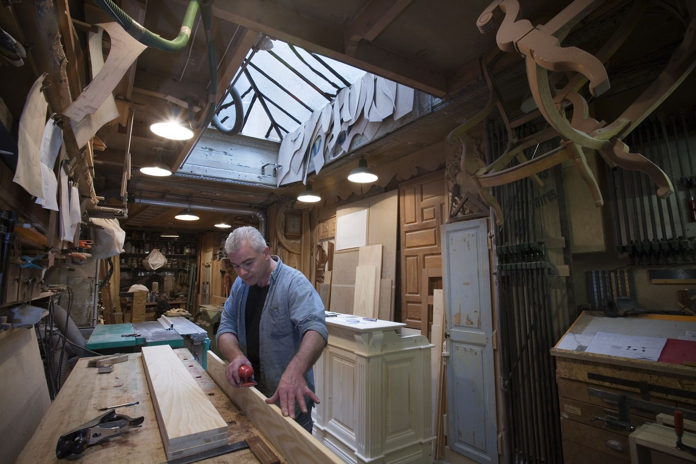
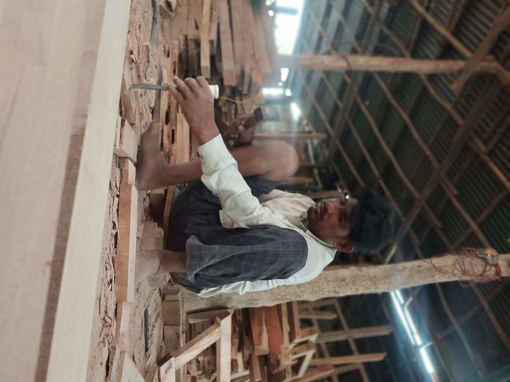
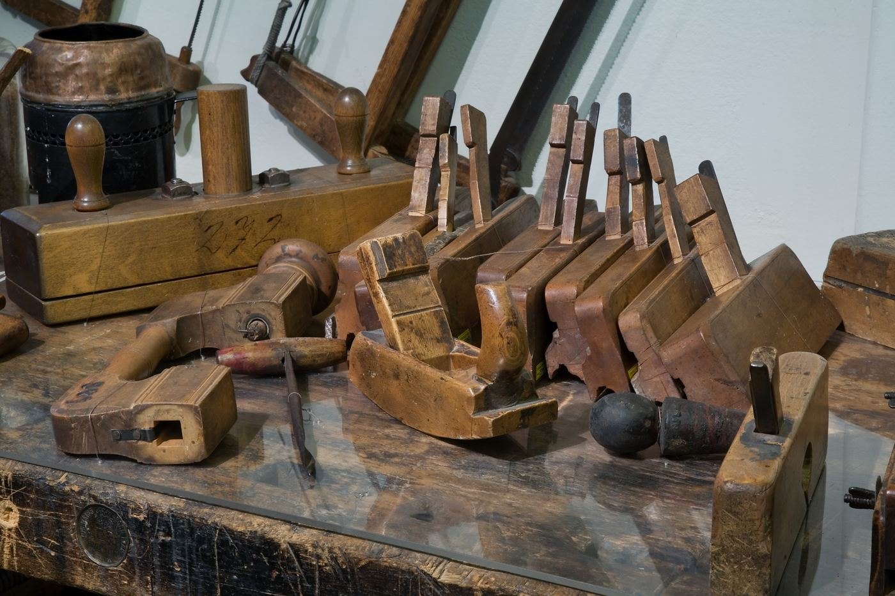

Échanger & prendre les mesures
Rendez-vous gratuit à l'atelier ou à domicile pour cerner le projet, les contraintes et le budget.
Devis gratuit sous 48h
Cuisines, dressings, escaliers et mobilier en bois massif, façonnés à la main à Soual. De l'esquisse à la pose, garantie décennale incluse.

Installé à Soual depuis 2009, l'Atelier Reynès dessine et façonne à la main chaque pièce, du premier rendez-vous à la pose.
Chaque projet part de vos besoins et de votre intérieur, sans catalogue standard. Les essences proviennent de scieries françaises certifiées PEFC, choisies une à une selon l'usage recherché.

Chaque projet est dessiné sur mesure puis fabriqué à l'atelier, avant la pose chez vous.
Conçues et fabriquées à l'atelier, adaptées à votre espace.
Agencements intérieurs dessinés au millimètre pour chaque pièce.
Droits, quart tournant ou hélicoïdaux, en essences nobles.
Tables, bibliothèques et pièces uniques en bois massif.
Menuiseries extérieures bois, posées dans les règles de l'art.
Menuiseries et mobilier anciens remis en état, sans perdre leur cachet.

Une démarche claire, du premier échange à la pose, sans surprise sur le délai.
Rendez-vous gratuit à l'atelier ou à domicile pour cerner le projet, les contraintes et le budget.
Plan détaillé et devis précis, présentés avant toute validation du projet.
Façonnage en atelier, puis installation soignée, garantie décennale incluse.

Des outils affûtés et entretenus à la main, pour un geste précis sur chaque pièce.
« Un travail d'une précision remarquable, et un vrai sens de l'écoute. Notre cuisine en chêne massif dépasse ce qu'on imaginait. »
10 ans
Garantie décennale sur chaque réalisation
Une autre question ? Écrivez-nous, nous répondons sous 48h.
Comptez 4 à 8 semaines entre la validation du devis et la pose, selon la complexité et la saison, confirmées dès l'acceptation du devis.
Oui. Le rendez-vous, la prise de mesures et le devis détaillé ne coûtent rien et n'engagent à rien.
Dans un rayon de 40 km autour de Soual : Castres, Revel, Dourgne, Puylaurens et les environs. Au-delà, sur demande, pour les projets d'envergure.
Chêne, hêtre, noyer, frêne ou châtaignier selon l'usage, provenant de scieries françaises certifiées PEFC.
Oui, chaque réalisation est couverte par une garantie décennale et une assurance responsabilité civile professionnelle.
Décrivez votre projet, nous revenons vers vous sous 48h avec une première estimation.
Atelier visible sur rendez-vous, samedi inclus. Intervention dans un rayon de 40 km autour de Soual.